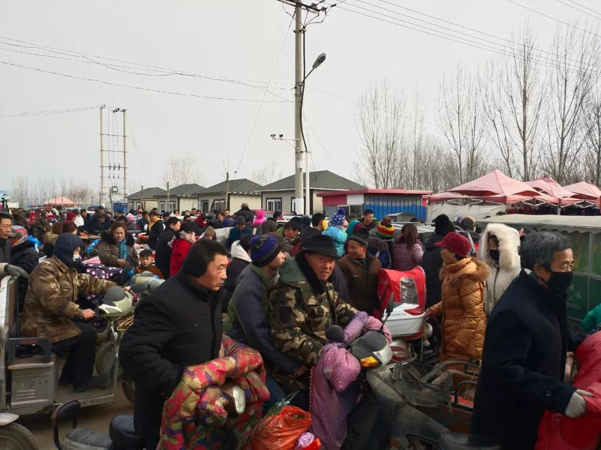
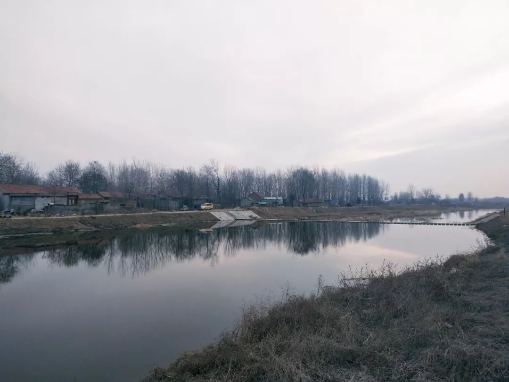
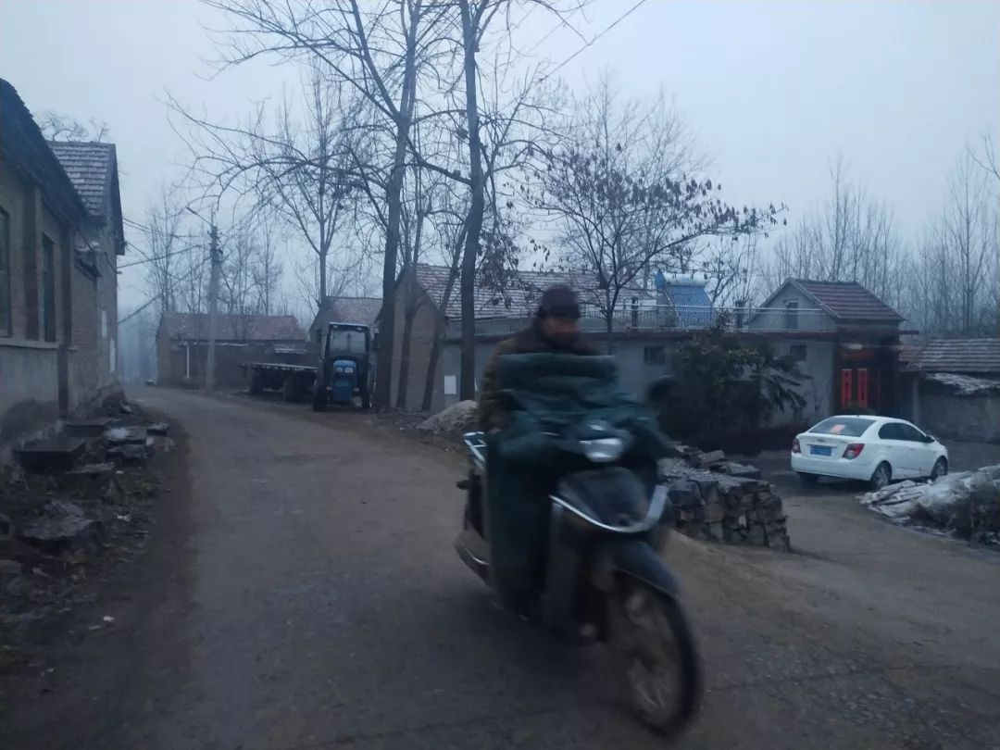
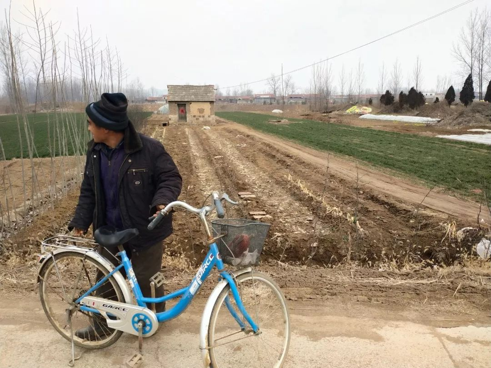
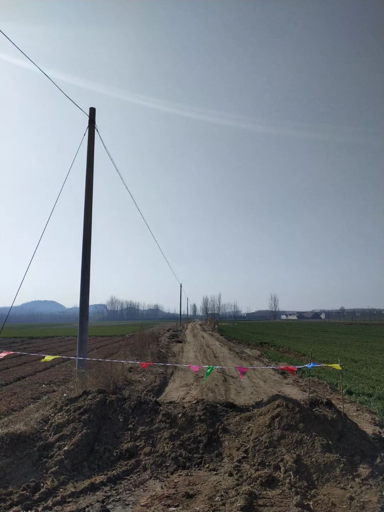
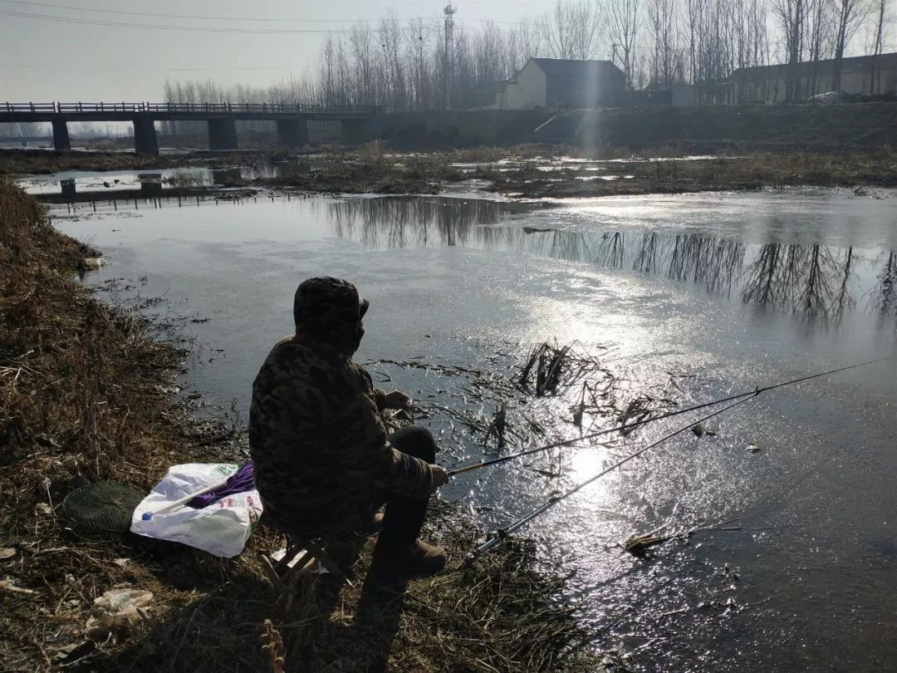

送走奶奶和爸爸，武汉女孩的漫长一月
原文链接 备份链接 武汉女孩薇薇到现在也不确定妈妈是怎么感染的，她只能想到一个可能性：1月6日，家里为爷爷办了葬礼。当时，大部分人对「出现不明原因病毒型肺炎」的消息并不在意。亲戚们从武汉各地赶来。葬礼后，妈妈开始发烧，之后，爸爸和奶奶也开 …


封村就像是把快节奏的生活给刹那间止住，无论是在城市还是在农村，这个年仿佛还在继续……

配图 | 作者供图
前 言

从2019年12月8日首例武汉新型冠状病毒肺炎患者出现，到2020年1月20日疫情的全面爆发，情况的发展揪着我们每一个人的心。
这是一场战争，在新年的伊始，爆发在每一个普通的、平凡的中国人身边。
这是我们的战争，我们热切地讨论、谨慎地分析，为灾难中陨落的生命而痛惜，为医者大无畏的精神所感动，为一切人为的错误而义愤填膺，为我们能为之所做的点滴小事而不懈努力。
人生海海，让我们在乱世中紧握双手，且行且惜。
网易人间「新冠肺炎 – 我们的战争」特辑，讲述每一天，我们与疫情赤膊相见。
新冠肺炎 – 我们的战争丨连载03
我的家乡太平村（化名），位于鲁东南三县两市交界处，是一个拥有500年历史、600多户2000多口人的普通北方村庄。
庚子年初一，是离太平村917公里外的武汉封城的第3天，也是太平村封村的前一天。
95岁的太奶对我说，她这一生，见过漫山遍野的蝗虫灾、大雨漫漶的水灾、覆盖村庄的雪灾，而肆虐南北的疫情真是极少见。尽管相距甚远，但太平村的空气里依然能嗅到那份不安的气息。疫情就这样不知不觉地笼罩在了村庄的上空。
初一，阴，封村前一天
大年初一凌晨2点半，母亲将我从睡梦中晃醒。按照春节前母亲请算命先生给看的日子，在这个时刻，要带着叠好的元宝和纸钱，在太平村的重要路口烧纸焚香磕头，保佑家人平安。
睡眼惺忪的我胡乱地穿好衣服，按照母亲的指示带好纸钱，再拿出两天前从大集上购买的炮竹，悬挂在院门口的石墙之上。
噼里啪啦，新年就来了。

| 腊月29日，人头攒动的太平村大集。（作者供图）
打开手电筒照着土路，我和母亲一起前往村子西边的大街。
尽管西大街是全村人逢年过节烧纸焚香祈福的地方，但过去的这一年，这里并不太平——先是53岁的老涛在乍暖还寒时，痛饮了一瓶劣质白酒之后，醉死在自己新盖的瓦房里；再是23岁的顽劣青年阿贵在8月份那场名为“利奇马”的台风中，淹死在太平村北边的怀河里。
另外还有两个50多岁的男人，东哥和民叔，先后罹患肺癌。在与癌症抗争了半年后，东哥先走了，直到去世之前，还坚信自己得的只是脑血栓；民叔也停下了手中的活计，不再到处打工干建筑，而是重拾自己年轻时的爱好——钓鱼。
西大街上的人说，每天都会看见人高马大的民叔提着鱼竿到怀河边钓鱼，挑着鱼竿在河岸上一坐就是一天，一条鱼也没有钓到，可每天依旧还会按时来。

| 太平村北面的怀河。（作者供图）
烧纸回来，天已微亮，父亲也已经收拾妥当。在太平村，每到大年初一，本姓氏的男人们要团聚在一起去给长辈们拜年；女人们则要一起到青石山和石婆婆庙里烧纸焚香。
跟往年一样，本家族内所有的男性都聚集在我家后，在父亲的带领下，先去给本族内辈分最高且年纪最长的太奶拜年。
太奶和三爷一家住在一起。一大早，大襟棉袄，裹着小脚的太奶坐在沙发上，面容喜乐。在父亲的带领下，所有男人进屋就跪下给太奶磕头，太奶则笑呵呵地站起来拿出糖果分给我们。我跟太奶开玩笑，我不要糖果要红包，太奶就笑呵呵地摸我的脑袋。
大家围坐在太奶身边聊起了天，内容无非是过去一年里的家长里短，而今年自然就与肆虐南北方的新型冠状病毒肺炎相关。
一向最受尊崇的三爷告诉我们，祖国上下形势严峻，“据说太平村也要封村了”。的确，封村的消息已悄然传开，先是县里的文件，然后是村里的微信群，镇上成立的“新型冠状病毒联防联控工作小组”所发的封村公告。
封村似乎就近在眼前，可今天，人们的焦虑似乎远在春节的热闹之下。

过去的许多年里，每逢大年初一，老邻居们便汇集到我们家里一起聊天。在给太奶拜年和石婆婆烧香之后，从上午9点到傍晚5点，先后有40余人来我家串门，而我的任务是把火炉烧红，把堂屋烘热、凉水烧开、茶叶泡好，等待父母的老邻居们纷至沓来。
第一波人是母亲的娘家人，表哥、表姐、表嫂和小侄子们，先是给我爸妈磕头拜年，然后就唠叨起过去一年干了什么挣钱的买卖，来年又有什么新的打算，话题最后又落在家族的祖坟遗址问题——这似乎是一个必须在郑重其事的节日里才可以谈的问题——百年前的那些老坟到底该如何处理，如何理顺每个祖坟与后代之间的关系等等，成为横亘在这个家族内部的首要议题，因为每年后辈们去上坟时总会搞不清哪个坟是这一家的，哪个坟又是另一家的。
这些看上去似乎不会影响人们现实物质生活的问题，却又是真真切切地影响着人们的精神世界和灵魂维度。表哥们的讨论热烈无比，直到老邻居们来串门，他们才起身离开。
平日里农忙，老邻居们一年之中难得有这样的空闲聚在一起聊家常。一波来了，另一波又走。
截止到这天下午，我在一边偷偷算了一下，邻居们今天在我家共聊了20多个话题，涉及到的故事15个之多，当事人更是不计其数，村子里严肃的生死话题在老邻居们的聊天中，似乎也都成了好玩的笑话。
等夜幕降临，村里的街灯亮起来的时候，村子里的扩音喇叭传出了刚上任的村长老张的声音，他严肃地跟太平村的全体村民宣布：年初二开始，因为新型肺炎疫情严重，太平村开始封村，防止病毒传到村子里来，任何家庭不要走街串巷，不要到处乱跑走亲戚。
母亲和父亲商量，年初二原本计划的赶庙会取消了。好在村子里可以到处走动，跟老邻居们串门聊天，也能打发些时光吧。
晚饭之后，陪父母来到怀河岸上看烟火。和往年一样，怀河岸上已经站满了村子里的人。当第一家炮竹被点燃后，接二连三地，村子四周一次次升腾起色彩缤纷的烟花来，这是太平村以及周围村庄几百年来保持的风俗：每个家族接已故的亲人魂灵回家过年，待到夜晚点燃鞭炮把他们再送回去。
这也是春节这个传统节日给予乡土社会最大的精神慰藉了。在这一天里，已故的长辈魂灵和现实世界的子孙后代同处一个空间，共度团圆佳节。
也就是在这一天，国家卫生健康委员会收到30个省（区、市）累计报告确诊病例1975例，现有重症病例324例，累计死亡病例56例。眼下，人们心头隐隐约约泛起的紧张终于开始发芽了，这个春节注定将和过去的春节截然不同。
大年初二，小雪，封村第一天
早晨，太平村的高音喇叭里响起了新上任村长老张的声音——
全体村民注意啦！全体村民注意啦！从今天起，咱们村通往其他村的几条主要道路，进行统一的封闭。走亲戚的村民就不要外出了，打个电话发个短信拜年就可以啦！
果不其然，经由太平村通往四周几个村的道路中央有的已经扎起了印有救灾专用字样的草绿色帐篷，帐篷旁边配备三到四个壮年男子，每个人都戴着白色口罩，如临大敌一般。一夜间，一些道路就堆满了渣土，高高地横亘在路中央。

| 村里的劝返告示（作者供图）
按照往年惯例，正月初二和初三是太平村走亲戚串门最热闹的两天。多数家庭都会早起点燃鞭炮，之后才出门走亲戚，这既是村庄风俗，更是图个吉利。可今天早晨，鞭炮炸响的声音明显变得稀少起来。
小雪飞扬，火炉正旺。村庄所属的县城尚未发现疑似病例，人们的情绪也未见紧张。既然无法走出村庄，索性关起门来喝酒聊天。
今天是三叔的主场，因为嫁到本村的女儿、女婿一家提着酒肉带着双胞胎儿子回娘家了，三叔三婶炒菜热酒，忙得不亦乐乎。
三叔当年在太平村也算是帅哥一枚，人送外号“小王志文”，彼时的三叔喜欢穿着喇叭裤，戴着墨镜，背着吉他走街串巷“流浪”。尤其在夏天夜晚来临，三叔经常坐在打麦场上抱着吉他弹唱。加之太平村夜晚经常在打麦场上放电影，这也给了三叔在广大村民面前展示才华的大好机会。
也就是在这一个个浪漫多情的电影放映之夜里，三叔的表演吸引了无数姑娘的眼光。最终和三叔走到一起的，是一个烫着卷发、一脸清秀、从来不喜欢下地干活的邻村姑娘。所有的事情顺理成章，两个年轻人在上世纪80年代末走进了婚姻。
转眼30多年过去了，三叔的两个女儿业已成家立业，有了自己的家庭和儿女。看着自己的女儿女婿和双胞胎外孙，当年的小王志文三杯小酒下肚，神采飞扬地开启了演讲——这也是我第一次认识到，自己这个三叔是如此有演讲天赋。
头头是道的人物小传，因果逻辑梳理得严丝合缝，然后才进入故事的内核，所有细节和情节让人听得身临其境，其间，更是大胆“爆料”了村子里的一家通过“借种”以期传宗接代的雷人故事，隐晦委婉，听得我和堂弟堂妹们一愣一愣，最后笑得前俯后仰。而此时的三叔则是神闲气定，拿起小酒杯一饮而尽，总结似的感叹一句：“世道变了啊！”作为故事的结束。
是夜，村子里冷得很，尽管疫情的紧张氛围笼罩着乡村，但只要酒肉上来，人们聚在小屋里，喝着烈酒，讲述这一年来发生在村里的奇人轶事 ，那些紧张和恐惧也会被开怀大笑所稀释，化作漫不经心的一瞥罢了。
大年初三，阴，封村第二天
一早，我还在梦中，就被太平村的高音喇叭吵醒了。村长老张一定是起了个大早，睡眼惺忪地披着他的油腻的皮大氅趴到破旧的村两委办公室桌子前，对着陈旧的麦克风开始了清晨的演讲。
躺在被窝里半梦半醒，我分明听出了他的愤怒：
“全体村民注意啦！全体村民注意啦！今天是咱们村封村的第二天，大家一定不要出村哈，一定要支持我们的工作！大家没事在家多看看电视，多了解一下武汉的情况，多注意防范，一定要把病毒扼杀在萌芽状态！
“还有啊！咱们村那些负责清理垃圾的村民，你们去看看咱们村在大街上的那十几个垃圾桶，现在都变成什么样了，过年就不打扫垃圾啦！你们抓紧时间今天就把这些垃圾清理完毕！我中午就去检查！另外，我一会放广播给大家听听，如何有效地防控新型肺炎病毒！一定要引起重视啊！”
不一会的功夫，绑在电线杆顶端的扩音喇叭里便清晰地响起了防范新型冠状病毒肺炎的宣传广播……

| 封村后的第二天，太平村路中央。（作者供图）
走在太平村的大街上，除了我，一个人也没有。家家户户紧闭着院门，村子的上空零星传来几声鞭炮炸响的声音，比昨天更加微小无力；过了十几分钟，终于看到远处一个人影缓慢地移动，等待他走近了，定睛一看原来是70岁的升爷。
大年初三，升爷就开始了工作，年轻时就丧妻的升爷如今一个人在邻村的养殖场里打工，我告诉升爷前面通往邻村的公路也被封了，升爷就嘟囔了一句：“老子他妈的走岔路也要去养殖场干活，那3000多只鸭子等着我去喂呢，要不然它们今天就会饿死！它们饿死了，我也就饿死了，你说对不对？”
望着升爷远去的背影，我难免一阵心酸。70多岁的升爷在养殖场大棚里佝偻着身子伺候着那3000多只嗷嗷待哺的扁嘴鸭，一年到头能赚2万块，要说能多点什么，也就是每天偷偷犒劳自己的几只鸭蛋。这些年，升爷最大的爱好就是喝着小酒就着鸭蛋，喝多了的时候，就念叨着自己多年前去世的老婆。
继续往南走，远处终于看到了逡巡在封存帐篷外的几个小青年，一个个戴着口罩，如同天兵天将般在临时搭建的帐篷外走动，与其说是为了阻止外村人进入太平村，倒不如说是为村长老张站岗放哨。
村长老张今年已经50多岁了，刚刚上任，踌躇满志。封村抗疫大概就是对他的第一考，用他的话说，就是“只许胜利不许失败”。就在昨天晚上，老张带领村两委成员深夜敲响了一个于1月上旬从武汉搭飞机回村的小伙子的院门。因为工作方式的问题，惹怒了小伙子的妈妈，好不容易才解决了居家隔离的问题。
从外面回来，已是中午，午饭过后，陪父母去看望住在村子东边的二舅妈。
87岁的二舅妈3年前摔折了胯骨后就再没站起来，躺在病榻上倒也还算精神矍铄，这个一辈子受苦受难的老人直到晚年才停止了忙碌的脚步，没想到却是以摔伤卧床的方式。
虽然躺在病榻上，可老人对外面的世界依旧十分关心，聊完疫情，又挂念起远在日本打工的儿媳。恰巧儿媳今天打来微信视频，老人躺在病榻第一句话竟是咨询日本那边有没有受疫情影响，不行就早点回国，感动得儿媳妇在视频那头眼泪直流。
去年，二舅妈的大哥大嫂在同一年里先后去世，一个享年95岁，一个享年96岁，算是高寿喜丧。二舅妈显然希望自己跟大哥大嫂一样能多活几年，然而一日三餐、吃喝拉撒都需要儿子照应的现实也困扰着她。
二舅妈对于儿子的悉心照料感动无比，却又心怀愧疚。在医疗和养老条件相对落后的村子里，当一个人失去劳动能力后逐渐老去，如何有尊严有幸福感地度过晚年，成了所有人都绕不开的问题。
大年初四，阴，封村第三天
早晨7点开始，字正腔圆的广播又响起了，两个播音员再一次围绕着如何防控新型冠状病毒展开了新一轮的宣传。
上午 8:40，村长老张和前两天一样来到村两委办公室按部就班地坐在办公桌前，对着劣质麦克风开始了宣讲，今天气氛尤为严肃：
“全体村民注意啦，全体村民注意啦！下个通知哈，下个通知哈。凡是从广东、湖南、四川、重庆、安徽、河南、北京返乡的人员，拿着身份证到村检测点登记！为了家人健康和他人的健康，凡是从以上几个省市回来的人员，必须抓紧到检测点登记。
“另外，从咱们村通往西营村和唐营村的两条村道今天也正式封堵哈，那些打算走亲戚看朋友就不要出去啦；还有啊，你要是打算去其他村玩耍的，必须要带着身份证，想去县城逛超市的，也得带身份证！”

| 通往另外一个村的桥已被封死。一个老人骑着电动车转了回来。（作者供图）
今天的老张应该是过度紧张了，一句话前后矛盾，通往其他村子的路已全部封死，怎么去其他村，怎么到县城逛超市？再说，在县城超市上班的堂妹也发来微信说，县城超市里空荡荡的，除了导购员和收银员孤零零地站在那儿发呆外，其他一个人也没有。不过，卖酒精的柜台除外。
老张的宣讲一点都没有要停止的意思：“另外，跟全体村民说一声哈，凡是家里把鸡散养在外面的，抓紧时间把它们圈养起来！狗拴在外面的，要立刻拴到家里去！别等我们去逮，那样面子上就不好看了！”
村长老张的紧张不无道理，正月初四（1月28日）这一天，全国累计报告确诊感染新型冠状病毒肺炎病例5974例，比正月初三（1月27日）增加了1459例。抗击新型肺炎任重而道远。
早饭过后，江表哥和江表嫂来我家玩。今年56岁的江表哥自从封村后就异常兴奋。逢人就说身体里有啥病菌，喝酒都可以消毒——而新型冠状病毒在江表哥的眼中，也是可以用酒杀死的，这也为他这几天喝酒找到了借口。
去年，江表哥在村子里的石粒厂打工，赚了5万块，2020年干什么，江表哥目前还没有计划。江表哥说近年来自己的体力大不如从前，重体力活更是无法承担，而留在村子里种地也不太合算。目前太平村大约有1800亩地，大多数田地都是由60岁以上的老人来耕种。年轻人要么去大城市打工，要么去县城里做生意，留在村子可能性不大。
当然，干活没有着落还不是让江表哥伤脑筋的事，真正让江表哥苦恼的是年前养在院门口的6只公鸡和3只大鹅在一个月黑风高的寒冷之夜被人给偷走了，这让江表哥大为光火。
为此，他一气之下把拴在门外的大黑狗饿了整整一天，因为大狗、公鸡和大鹅养在一个圈里。小偷在抓公鸡和大鹅的时候，大狗为何不叫唤、不咬他呢？
江表嫂给出的解释是，那天晚上江表哥喝多了，躺在沙发上早就睡死过去。大黑狗其实叫了的，但江表嫂也没太在意。第二天起来才猛然发现，公鸡和大鹅被偷走了，只留下一个空空的鸡窝和一条孤独的老狗。
为此，江表哥特意去邻居家看监控：监控视频里，昏暗的路灯下，一个熟悉的身影一闪而过，江表哥顿时目瞪口呆。
说到此，江表哥生生地喝了一口酒，不停地感叹起人情冷淡、世态炎凉来。这些年来，太平村不再是过去那个太平村了，人与人之间的关系也不是过去那么融洽和信任。
江表哥的感慨不无道理，盗窃事件在村子里常有发生。年前，83岁的老夏姨从外面赶集回来，刚进院子，眼睁睁地看着一个30多岁的小伙子从老夏姨家的堂屋里迈着悠闲的步子走出来，看见老夏姨，小伙子一愣，先是给老夏姨深深地鞠了一躬，然后双手抱拳连声道歉：不好意思阿姨，失礼了！失礼了！
等老夏姨反应过来的时候，小伙子已消失得无影无踪。这时候老夏姨才突然意识到家里进小偷了。
不过，老夏姨家里没什么可丢的，只有放在桌子上的3个钢镚被小偷顺手拿走。老夏姨家进小偷，在太平村里也成了一个笑话。
下午，村子里传来消息，太平村唯一一个在县城医院做护士的谢家姑娘已启程前往武汉支援了，大家都为这个勇敢的姑娘点赞。
而与此同时，镇上的疫情联防联控小组也发出了公告，镇属的5个大型农贸大集也将暂时休市，太平村大集属于其中一个。未来一段时间，赶集也不太可能了。而太平村上要依赖这些大集做生意的买卖人也将不能出摊，卖油条和馓子的老京家、卖豆腐脑的春嫂家、卖炸串的华叔家、卖猪肉的老叶弟兄都只能在家里坐着了。往年，这是他们几家生意最红火的时候。
可这非常时期，又能怎么办呢？
大年初五，小雪，封村第四天
天空中飘着小雪，凉风嗖嗖地吹着。直到上午9:40，扩音喇叭里才传来村长老张的声音，他先是把前几天强调的事情重复了一遍，最后说道：“本村的也就不要串门了，截止到目前，咱们这个县城一个病例也没发现，咱们村不能拖后腿，决不能松懈！”
村里老人本就很少出村，更少出门。可眼下，外人也进不来了。
一大早，80岁的蒋家奶奶站在院门口不停地张望，今天本是在县城安家的儿子和女儿要来看她，可是因为封村封城都没有来。

| 站在门口等儿子女儿的蒋家奶奶（作者供图）
蒋家奶奶年轻时候算是一个叱咤风云的人物，18岁的时候就已经是村子里的先进分子，是村干部的重点培养对象，每每聊起年轻时候的情景，蒋家奶奶脸上总会洋溢着光荣和幸福的光芒。
时过境迁，如今让蒋家奶奶高兴的不多，心烦的则不少。尤其是她的眼疾，白内障让老人痛苦不堪，尽管术后可以模糊地看清东西，但生活难免要受影响。
按照往年，这一天是村子里的壮年劳力准备开工干活的日子，今年肯定是不可能了。48岁的峰哥和49岁的勇表哥在这个寒冷的早晨同时出现在各自的责任田里。

| 水渠旁边，戴着口罩的峰哥和揣着手的勇表哥在聊天（作者供图）
峰哥戴着口罩，先从太平村通往县城的公路上走了一番，确认这条道路也被封了之后，才踱着步子回来。
勇表哥则骑着小自行车来看他的菜园地，3亩菜园地是老爹留给他的唯一财产，看着老爹当年留在菜园地的那栋破旧的小土屋，勇表哥感慨万千。
正在读大三的女儿每年2万多块的学费和生活费是勇表哥全家一年里最重要的开支，今年他又从别人那里以每亩200块的价格承包了10亩田，打算用来种各式蔬菜和花椒。他甚至在这10亩田里打了一口50米深的水井。
勇表哥说他不想到城里打工了。这个年代能够靠种地赚钱养家已实属不易，还是得精耕细作、精打细算，才能侍弄好土地和家庭。
峰哥就和勇表哥开玩笑，让勇表哥多种白菜，疫情期间物价上涨，什么贵种什么。勇表哥则说不能看行就市，要提前规划才行。

| 站在菜园地旁边的勇表哥。（作者供图）
很快，两个人就聊起今年村子里谁挣钱最多。在进行了一系列比较之后，终于得出结论——应该是43岁的养猪专业户老杰挣钱最多，他俩估计老杰挣了100多万。
我偷偷琢磨，他俩或许忘记了老杰在2019年上半年的时候遭遇的猪瘟，几百斤的大肥猪倒毙在猪圈里，只看到了下半年在猪肉疯长到每斤接近40块的时候，老杰逐渐鼓起的钱包吧。
封村的生活平淡无奇。很多年前，乡村过年总是要从正月初一一直延续到正月十五，在这期间的每一天都有年味。如今乡村和城市一样忙碌。正月初五一过，初六就要开始一年的计划和工作了。
封村就像是把快节奏的生活给刹那间止住，无论是在城市还是在农村，这个年仿佛还在继续。
大年初六，阴，封村第五天
每年的年初六（1月30日），都是王庄大集开市的日子。
早晨8点，45岁的东哥点燃了炮竹迎接开集。东哥和东嫂一年四季开着货车载着油锅和面粉赶大集，炸油条和馓子。今天就是每年春节过后，东哥要赶的第一个大集。
尽管镇上早已下了公告，镇属的五个大集统一封市，东哥却仍然抱着一丝希望，以为周围村庄的村民会自发地去赶集。
当我搭载他的小摩托车和他一并抵达王庄大集的时候，东哥才意识到自己错了——空阔的王庄大集上一个人也没有。
回村的路上，东哥一边开车一边和我埋怨。东哥的大儿子今年刚刚20岁，一年前和邻村的一个大他6岁的姑娘恋爱了，半个月前姑娘为他们家生下了一个大胖小子，这让东哥20岁的儿子措手不及，也让年轻的东哥和东嫂有点不适应。
为了照顾好儿媳妇和小孙子，东嫂专门从县城的月子中心请来了月嫂，这可能是太平村有史以来第一次有人请月嫂。月嫂来的第一天就把一张产妇食谱摆在了东嫂面前。
原本，月嫂7000块钱的月薪就已经让东嫂心疼得难受，没想到，食谱上有一项竟然是：产妇一天吃2个鸡蛋即可，其他的也不用吃太多。要知道当年东嫂坐月子的时候一顿饭就可以吃16个鸡蛋啊！
东嫂百思不解，月嫂就解释说，这叫科学合理的膳食。
东哥抱怨个不停，说儿子结婚在县城买楼房已经花掉了他一大半的积蓄，另外还要买车。问题是没有任何收入的儿子和儿媳将来如何挣钱养活孩子？
农村小伙子跑到县城买房子结婚，如今已经是“惯例”了，可是没有工作怎么搞月供？买车怎么搞月供？但是，要不到县城买房买车，儿子就会找不到媳妇啊。
“这肺炎再不停，封市再持续，用不了一个月，就要少挣2万块钱！”这让不仅得养着老婆儿子，还得养着儿媳和孙子的东哥太苦恼了。
下午，84岁的奶奶说，想去3公里外的东沟村看望87岁的姐姐，也就是我的姨姥姥。姐妹俩已经4年没见面了。
我跟奶奶说现在各个村子已经全面封闭，没法出门，汽车没法走，拖拉机也没法走。奶奶便让我骑电三轮带她去。原来奶奶早就打听好了，封村的道路用土堆挡着，电动车过去没问题。

| 通往东沟村的土路也被封。（作者供图）
我骑着电动三轮车，载着84岁的奶奶和一竹篮山鸡蛋、两箱牛奶前往东沟村。翻过青石山坡，远远地就可以看见东沟村了。车子还未到，远远地就可以看见挡在路上的土堆和监测站，刚刚越过土堆，3个戴口罩的中年男人把我和奶奶拦了下来，要我和奶奶拿着身份证进行统一登记。
奶奶有些生气，说是走娘家来了你们还要看我的身份证。3个中年男人一听，立马毕恭毕敬地问奶奶去谁家？奶奶则反问他们是谁家的孩子？一来二去，3个男人发现按照辈分讲，他们还得管奶奶叫二姑。
大家立刻说，要亲自送奶奶进村——我突然觉得，这是来到了奶奶的地盘。
村子中央大路上，在晒太阳的老人看见奶奶回来，都过来打招呼，奶奶则让我把电动车骑得慢一点。看到娘家的邻居们，奶奶格外高兴，走两步就要停下来和他们聊家常，一条并不太长的乡村大路，足足走了半个小时。
抵达姨姥姥家的时候已接近中午了，87岁的姨姥姥坐在院子里晒太阳，我没有打搅两位老人的聊天，独自搬着马扎坐在姨姥姥家的院子门口晒太阳，想起年少时，常跟随奶奶来村里走亲戚。
眼下四处风声鹤唳，自己能得以在此宁静地追忆往昔，也不失为一种幸福。
大年初七，晴，封村第六天
按照传统风俗，正月初七，也是太平村“送年”的日子，意为春节已经过去，人们要再一次投入到日常生活的忙碌中去。
这天早晨，父亲和母亲起得很早，母亲点燃了一炷香放在院子的香炉中。父亲将爆竹挑在竹竿上点燃，还是一阵噼里啪啦，春节就这样结束了。
今天，走出院子站在大街上晒太阳的人终于多了起来，也有人步行着来到田里看庄稼。
民叔又骑着电动车背着鱼竿来到怀河岸上，安下马扎，坐在河边上开始钓鱼。同行的还有老光棍森叔，森叔的设备非常专业，先把用白酒、香油和蜂蜜浸泡过的小米撒到河里去，然后再把挂有蚯蚓的鱼钩扔到河中心去，最后才挑着鱼竿坐在马扎上安静地等待鱼儿上钩。

| 在河岸钓鱼的老光棍森叔（作者供图）
尽管设备专业、流程又规范，但往后的整整两个小时里，森叔一条鱼也没钓到。反倒是民叔连续钓到了4条胖乎乎的鲫鱼。
聊起往后的生活，森叔也挺感慨，说自己57岁了，不可能成立家庭，只期待后面不要有疾病，安静地一个人过完后面的日子。
到了今年，太平村共计有40多个光棍，70岁以上的、身体不好的，都被送到了镇上的养老院。
春节前还听说，镇上养老院的几条老光棍强烈要求回太平村过年，驼背的立表哥去了五弟家过年，老实巴交的忠大爷去了侄子家，一生风流倜傥的国爷大年夜一个人在破屋露天的老房子里守岁。胜大爷和开大爷也一直说要回来，可身体不便、只能躺在床上，又怎么回村呢？立表哥说，他们从敬老院回村子的时候，胜大爷躺在床上因思家心切一直在哭。
正月初七，也是立表哥他们回敬老院的日子。吃过早饭，忠大爷坐在饭桌前掉眼泪，侄子问他为啥哭，忠大爷说不想去敬老院，想留在村子里。只有倜傥的国爷看似潇洒，站在太平村大街上，向所有人宣布要回敬老院了。风流倜傥一生，可谁又能真正知道国爷的内心呢？
大家唠叨着这些事，一个上午一条鱼也没钓到的森叔就说，自己是怎么都不会去敬老院的，“多攒钱，让侄子们将来给养老。”
傍晚6点整，喧嚣了一天的高音喇叭终于休息了。所有人都期待着，早日能把道路打开，毕竟日子还要继续过下去。
（为保护当事人隐私，文中人物名、地名皆为化名）
编辑 | 沈燕妮
麦 仓
在路上，有新鲜的故事和可能
本文系网易新闻人间工作室独家约稿，并享有独家版权。如需转载请在后台回复【转载】。
投稿给“人间-非虚构”写作平台，可致信：thelivings@vip.163.com，稿件一经刊用，将根据文章质量，提供千字500元-1000元的稿酬。
投稿文章需保证内容及全部内容信息（包括但不限于人物关系、事件经过、细节发展等所有元素）的真实性，保证作品不存在任何虚构内容。
其它合作、建议、故事线索，欢迎于微信后台（或邮件）联系我们。


点击以下「关键词」，查看往期内容：
群聊魔鬼 | 月嫂回忆录 |家暴 | 健身房的坑 | 生子丸
考公| 萌宠博主 | 82年的金智英 | 女大学生的毒虫男友
大牛失业 | 卧底狱警 | 娶妻改命 | 中年男人的窝囊死亡
职校老师 | 产科记事 | 改嫁 | 寻业中国 | 三大队 | 股市梦碎
扶弟魔 | 末路狂花 | 下乡扶贫| 外卖小哥 | 杀死我的女神
东北相亲 | 我放弃了科研 | 网红女同学 |与巨婴离婚的女人

文章已于修改
原文链接 备份链接 武汉女孩薇薇到现在也不确定妈妈是怎么感染的，她只能想到一个可能性：1月6日，家里为爷爷办了葬礼。当时，大部分人对「出现不明原因病毒型肺炎」的消息并不在意。亲戚们从武汉各地赶来。葬礼后，妈妈开始发烧，之后，爸爸和奶奶也开 …
原文链接 备份链接 当上门拜年的人扑空、救护车里的医护人员被迫下车清理路障、村民风声鹤唳草木皆兵，“封村”政策执行的粗放性又不免被摆到台面上来 洛阳南村小区门口悬挂着横幅 / 受访者 供图 文 |《财经》记者 王静仪 王斌斌 特约撰稿 杨 …
原文链接 备份链接 小P是我的朋友，她是一个严格意义上正宗的老武汉人。她也是这次坚守在一线保障基本民生的工作人员。她要安排好单位的值班，开车出去给值班人员买菜保障后勤，她是一个普普通通的武汉人，也是一个正在为抗疫作出自己贡献的武汉人。她抽 …
原文链接 备份链接 *************▲************* 1月27日，旅客在关闭的青岛汽车总站外徘徊。 （新华社记者 李紫恒/图） 全文共*1705*字，阅读大约需要*4*分钟。 我们村“封”在村里的年轻人每天猫在家 …
原文链接 备份链接 今天是“武汉日常”每日书的第四篇，在孝感的学生写到当地村民自发拦路封村，尽管道路后面的横幅还写着他们希望并且欢迎在外乡亲回家；有在黄石的编剧路过黄石最繁华的步行街，发现那里几乎没有任何动静；有居住在武汉市区自愿帮助陌生 …